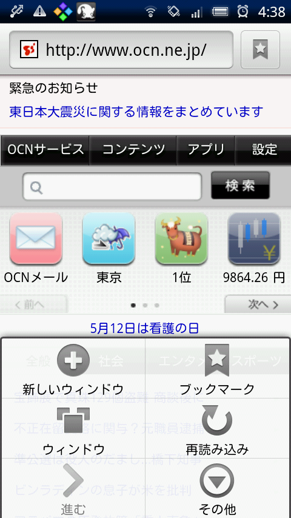
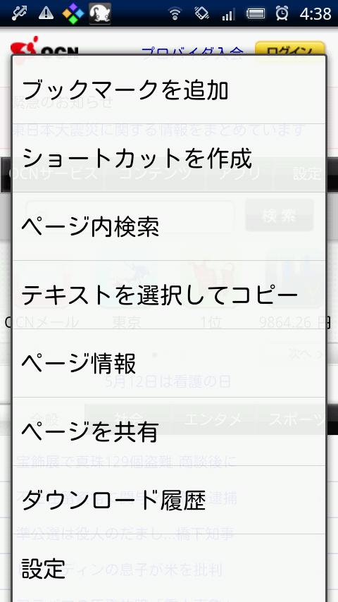
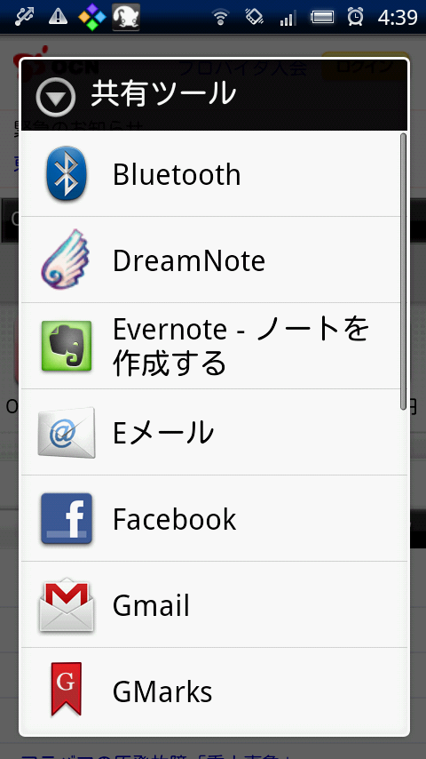
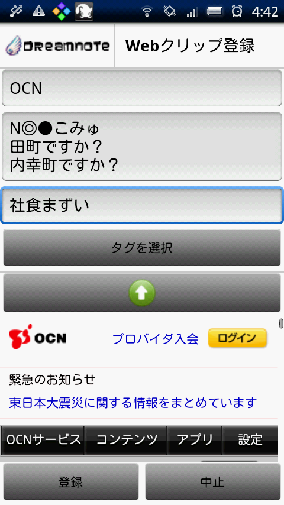
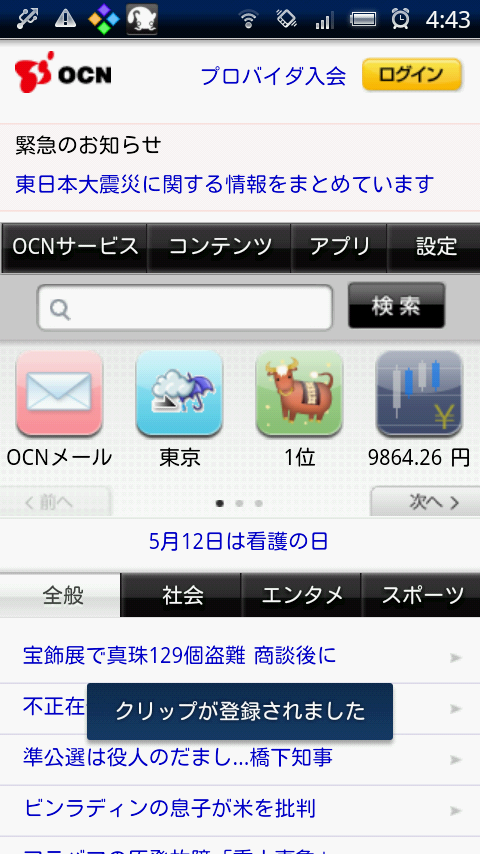
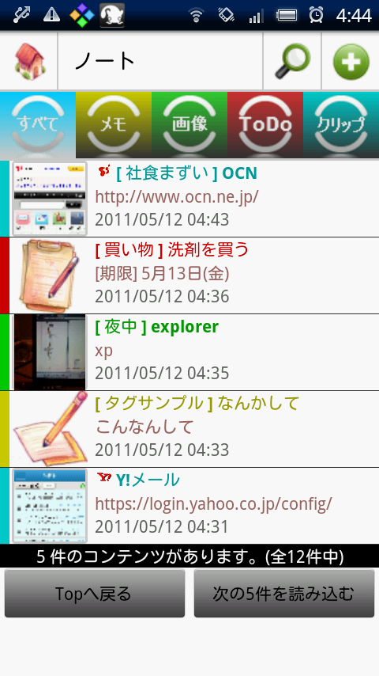
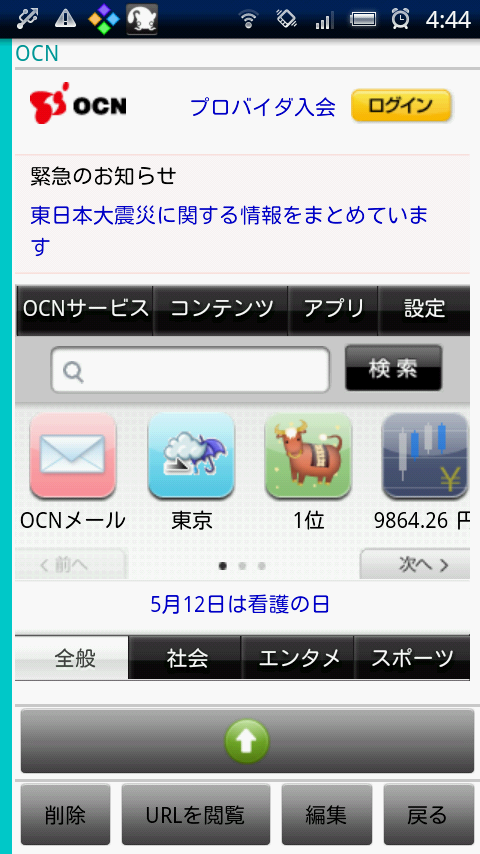

DreamNoteでウェブページをクリップする手順を説明します。(Ver1.168)
説明に使用している画面はバージョンの古いものを使用していますが、
基本的な操作に違いはありません。
Webページの保存は、Webページの著作権を考慮してご利用下さい。
クリップ手順
- ブラウザのメニューを開き、「その他」を選択します。
 - 「ページを共有」を選択します。
 - 「共有ツール」から「DreamNote」を選択します。
 - クリップ登録画面が表示されますので、タイトルが自動的に入力されるまで待ち、タイトル/備考/タグを編集して「登録」ボタンで登録します。

※タイトルはクリップするページのタイトルが自動的に入力されます。目的とするページのタイトルが自動入力されるまで待たないと、正しく保存できない場合があります。 - クリップの登録、または中止をするとブラウザ画面に戻り、処理結果が画面下部に表示されます。
 - クリップ登録すると、DreamNoteの「ノート閲覧」画面に登録されたクリップが表示されます。
 - ノート閲覧画面のクリップを選択することで、クリップしたウェブページを閲覧することができます。

ログインの必要なWebページの保存について
- Webページによっては、Webクリップできない場合もあります。
- 保存できているWebページも今後保存できなくなることが考えられます。